7. Compiling PCL from source on Windows¶
This tutorial explains how to build the Point Cloud Library from source on Microsoft Windows platforms. In this tutorial, we assume that you have built and installed all the required dependencies, or that you have installed them using the dependencies installers provided on the downloads page.
Contents
Note
If you installed PCL using one of the all-in-one provided installers, then this tutorial is not for you. The all-in-one installer already contains prebuilt PCL binaries which are ready to be used without any compilation step.
Note
If there is no installers for your compiler, it is recommended that you build the dependencies out of source. The Building PCL’s dependencies from source on Windows tutorial should guide you through the download and the compilation of all the required dependencies.
7.1. Requirements¶
we assume that you have built and installed all the required dependencies, or that you have installed them using the dependencies installers provided on the downloads page. Installing them to the default locations will make configuring PCL easier.
Boost
used for shared pointers, and threading. mandatory
Eigen
used as the matrix backend for SSE optimized math. mandatory
FLANN
used in kdtree for fast approximate nearest neighbors search. mandatory
Visualization ToolKit (VTK)
used in visualization for 3D point cloud rendering and visualization. mandatory
Qt
used for applications with a graphical user interface (GUI) optional
QHULL
used for convex/concave hull decompositions in surface. optional
OpenNI and patched Sensor Module
used to grab point clouds from OpenNI compliant devices. optional
GTest version >= 1.6.0 (http://code.google.com/p/googletest/)
is needed only to build PCL tests. We do not provide GTest installers. optional
Note
Though not a dependency per se, don’t forget that you also need the CMake build system (http://www.cmake.org/), at least version 3.5.0. A Git client for Windows is also required to download the PCL source code.
7.2. Downloading PCL source code¶
To build the current official release, download the source archive from http://pointclouds.org/downloads/ and extract it somewhere on your disk, say C:\PCL\PCL-1.5.1-Source. In this case, you can go directly to Configuring PCL section, and pay attention to adjust the paths accordingly.
Or, you might want to build an experimental version of PCL to test some new features not yet available in the official releases. For this, you will need git ( http://git-scm.com/download ).
The invocation to download the source code is thus, using a command line:
cd wherever/you/want/to/put/the/repo/ git clone https://github.com/PointCloudLibrary/pcl.git
You could also use Github for Windows (https://windows.github.com/), but that is potentially more troublesome than setting up git on windows.
7.3. Configuring PCL¶
On Windows, we recommend to build shared PCL libraries with static dependencies. In this tutorial, we will use static dependencies when possible to build shared PCL. You can easily switch to using shared dependencies. Then, you need to make sure you put the dependencies’ dlls either in your PATH or in the same folder as PCL dlls and executables. You can also build static PCL libraries if you want.
Run the CMake-gui application and fill in the fields:
Where is the source code : C:/PCL/pcl
Where to build the binaries: C:/PCL
Now hit the “Configure” button. You will be asked for a generator. A generator is simply a compiler.
Note
In this tutorial, we will be using Microsoft Visual C++ 2010 compiler. If you want to build 32bit PCL, then pick the “Visual Studio 10” generator. If you want to build 64bit PCL, then pick the “Visual Studio 10 Win64”.
Make sure you have installed the right third party dependencies. You cannot mix 32bit and 64bit code, and it is highly recommended to not mix codes compiled with different compilers.
In the remaining of this tutorial, we will be using “Visual Studio 10 Win64” generator. Once you picked your generator, hit finish to close the dialog window. CMake will start configuring PCL and looking for its dependencies. For example, we can get this output :
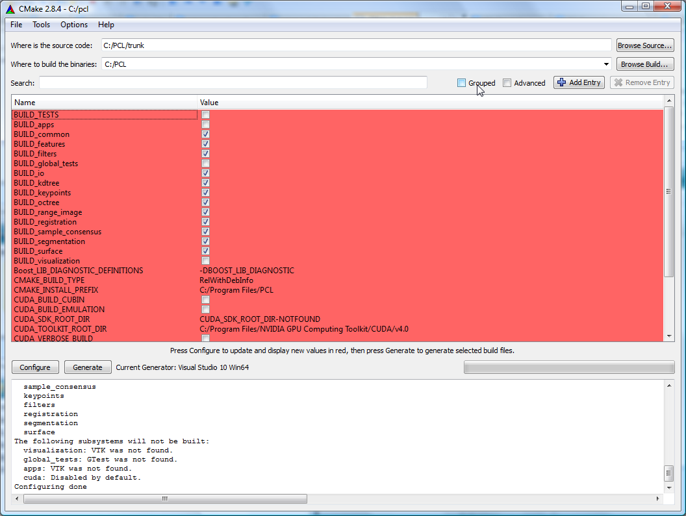The upper part of CMake window contains a list of CMake variables and its respective values. The lower part contains some logging output that can help figure out what is happening. We can see, for example, that VTK was not found, thus, the visualization module will not get built.
Before solving the VTK issue, let’s organize the CMake variables in groups by checking the Grouped checkbox in the top right of CMake window. Let’s check also the Advanced checkbox to show some advanced CMake variables. Now, if we want to look for a specific variable value, we can either browse the CMake variables to look for it, or we can use the Search: field to type the variable name.
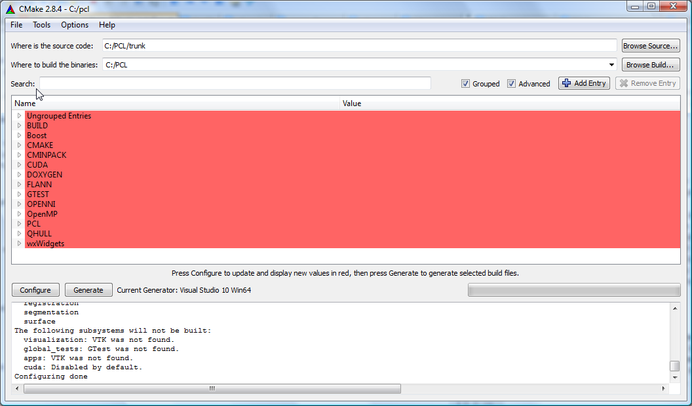Let’s check whether CMake did actually find the needed third party dependencies or not :
Boost :
CMake was not able to find boost automatically. No problem, we will help it find it :) . If CMake has found your boost installation, then skip to the next bullet item.
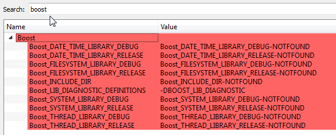Let’s tell CMake where boost headers are by specifying the headers path in Boost_INCLUDE_DIR variable. For example, my boost headers are in C:\Program Files\PCL-Boost\include (C:\Program Files\Boost\include for newer installers). Then, let’s hit configure again ! Hopefully, CMake is now able to find all the other items (the libraries).
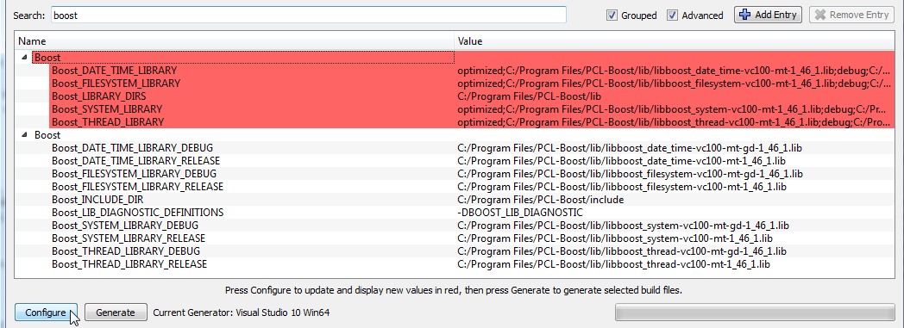Note
This behaviour is not common for all libraries. Generally, if CMake is not able to find a specific library or package, we have to manually set the values of all the CMake related variables. Hopefully, the CMake script responsible of finding boost is able to find libraries using the headers path.
Eigen :
Eigen is a header-only library, thus, we need only EIGEN_INCLUDE_DIR to be set. Hopefully, CMake did find Eigen.
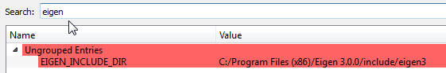FLANN :
CMake was able to find my FLANN installation. By default on windows, PCL will pick the static FLANN libraries with _s suffix. Thus, the FLANN_IS_STATIC checkbox is checked by default.
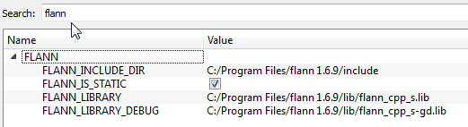Note
If you rather want to use the shared FLANN libraries (those without the _s suffix), you need to manually edit the FLANN_LIBRARY and FLANN_LIBRARY_DEBUG variables to remove the _s suffix and do not forget to uncheck FLANN_IS_STATIC. Make sure the FLANN dlls are either in your PATH or in the same folder as your executables.
Note
In recent PCL, the FLANN_IS_STATIC checkbox no longer exists.
Qt :
It is highly recommended to install Qt to the default path suggested by the installer. You need then to define an environment variable named QTDIR to point to Qt installation path (e.g. C:\Qt\4.8.0). Also, you need to append the bin folder to the PATH environment variable. Once you modify the environment variables, you need to restart CMake and click “Configure” again. If Qt is not found, you need at least to fill QT_QMAKE_EXECUTABLE CMake entry with the path of qmake.exe (e.g. C:\Qt\4.8.0\bin\qmake.exe), then click “Configure”.
VTK :
CMake did not find my VTK installation. There is only one VTK related CMake variable called VTK_DIR. We have to set it to the path of the folder containing VTKConfig.cmake, which is in my case : C:\Program Files\VTK 5.6\lib\vtk-5.6 (C:\Program Files\VTK 5.8.0\lib\vtk-5.8 for VTK 5.8). After you set VTK_DIR, hit configure again.
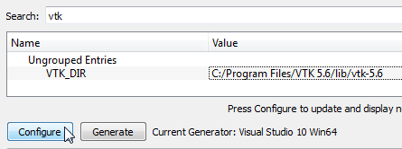After clicking configure, in the logging window, we can see that VTK is found, but the visualization module is still disabled manually. We have then to enable it by checking the BUILD_visualization checkbox. You can also do the same thing with the apps module. Then, hit configure again.
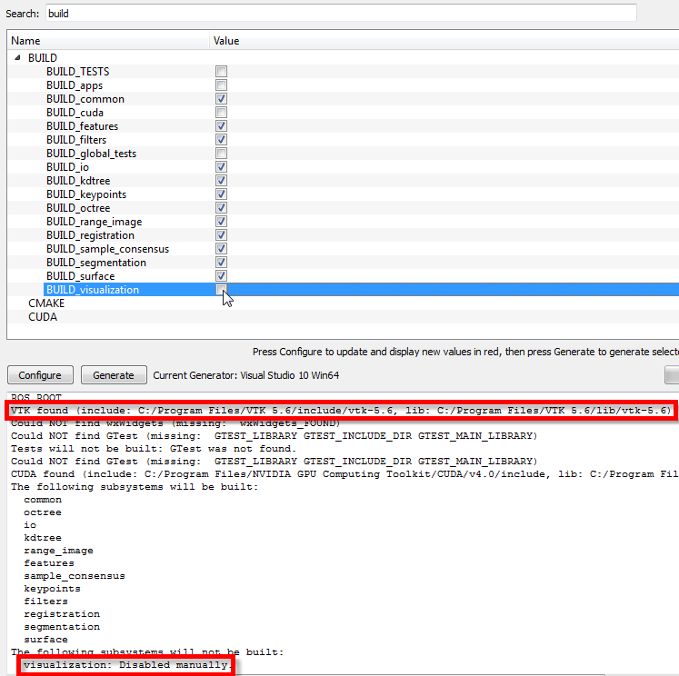QHull :
CMake was able to find my QHull installation. By default on windows, PCL will pick the static QHull libraries with static suffix.
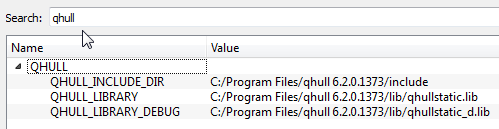OpenNI :
CMake was able to find my OpenNI installation.
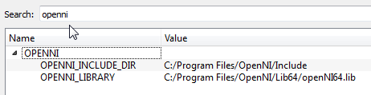Note
CMake do not look for the installed OpenNI Sensor module. It is needed at runtime.
GTest :
If you want to build PCL tests, you need to download GTest and build it yourself. In this tutorial, we will not build tests.
Once CMake has found all the needed dependencies, let’s see the PCL specific CMake variables :
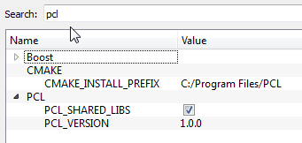PCL_SHARED_LIBS is checked by default. Uncheck it if you want static PCL libs (not recommended).
CMAKE_INSTALL_PREFIX is where PCL will be installed after building it (more information on this later).
Once PCL configuration is ok, hit the Generate button. CMake will then generate Visual Studio project files (vcproj files) and the main solution file (PCL.sln) in C:\PCL directory.
7.4. Building PCL¶
Open that generated solution file (PCL.sln) to finally build the PCL libraries. This is how your solution will look like.
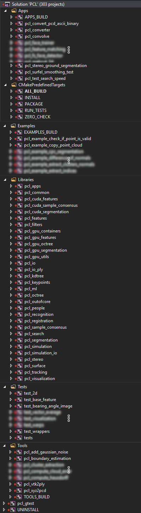Building the “ALL_BUILD” project will build everything.
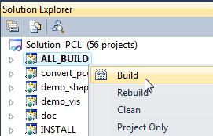Note
Make sure to build the “ALL_BUILD” project in both debug and release mode.
7.5. Installing PCL¶
To install the built libraries and executables, you need to build the “INSTALL” project in the solution explorer. This utility project will copy PCL headers, libraries and executable to the directory defined by the CMAKE_INSTALL_PREFIX CMake variable.
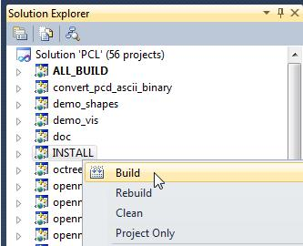Note
Make sure to build the “INSTALL” project in both debug and release mode.
Note
It is highly recommended to add the bin folder in PCL installation tree (e.g. C:\Program Files\PCL\bin) to your PATH environment variable.
7.6. Advanced topics¶
Building PCL Tests :
If you want to build PCL tests, you need to download GTest 1.6 (http://code.google.com/p/googletest/) and build it yourself. Make sure, when you configure GTest via CMake to check the gtest_force_shared_crt checkbox. You need, as usual, to build GTest in both release and debug.
Back to PCL’s CMake settings, you have to fill the GTEST_* CMake entries (include directory, gtest libraries (debug and release) and gtestmain libraries (debug and release)). Then, you have to check BUILD_TEST and BUILD_global_tests CMake checkboxes, and hit Configure and Generate.
Building the documentation :
You can build the doxygen documentation of PCL in order to have a local up-to-date api documentation. For this, you need Doxygen (http://www.doxygen.org). You will need also the Graph Visualization Software (GraphViz, http://www.graphviz.org/) to get the doxygen graphics, specifically the dot executable.
Once you installed these two packages, hit Configure. Three CMake variables should be set (if CMake cannot find them, you can fill them manually) :
DOXYGEN_EXECUTABLE : path to doxygen.exe (e.g. C:/Program Files (x86)/doxygen/bin/doxygen.exe)
DOXYGEN_DOT_EXECUTABLE : path to dot.exe from GraphViz (e.g. C:/Program Files (x86)/Graphviz2.26.3/bin/dot.exe)
DOXYGEN_DOT_PATH : path of the folder containing dot.exe from GraphViz (e.g. C:/Program Files (x86)/Graphviz2.26.3/bin)
Then, you need to enable the documentation project in Visual Studio by checking the BUILD_DOCUMENTATION checkbox in CMake.
You can also build one single CHM file that will gather all the generated html files into one file. You need the Microsoft HTML HELP Workshop. After you install the Microsoft HTML HELP Workshop, hit Configure. If CMake is not able to find HTML_HEL_COMPILER, then fill it manually with the path to hhc.exe (e.g. C:/Program Files (x86)/HTML Help Workshop/hhc.exe), then click Configure and Generate.
Now, in PCL Visual Studio solution, you will have a new project called doc. To generate the documentation files, right click on it, and choose Build. Then, you can build the INSTALL project so that the generated documentation files get copied to CMAKE_INSTALL_PREFIX/PCL/share/doc/pcl/html folder (e.g. C:\Program Files\PCL\share\doc\pcl\html).
7.7. Using PCL¶
We finally managed to compile the Point Cloud Library (PCL) as binaries for Windows. You can start using them in your project by following the Using PCL in your own project tutorial.